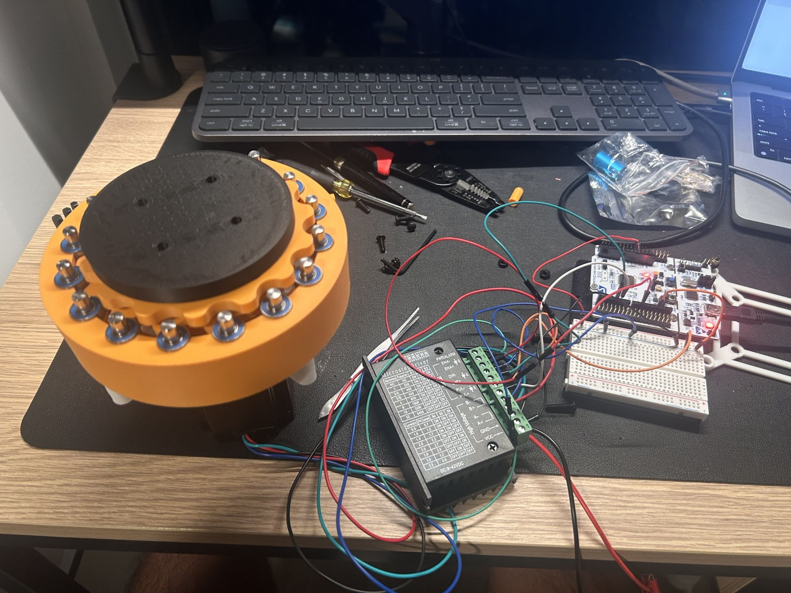

Parts & hardware BOM
Verified printed quantities and known hardware, with uncertain dimensions and purchase prices left explicit.
Download BOM CSVRobotics / Build resources
A 3D-printed cycloidal actuator, built to get my hands dirty with robotics.
This is V1: two cycloidal disks in a printed housing, a NEMA 23 stepper motor, and a lot of lessons about fits, cracked parts and getting everything to move together.

01 / Start here
The printed set, matching controller files and parts list are collected here, along with the assembly notes and what still needs measuring.
Verified printed quantities and known hardware, with uncertain dimensions and purchase prices left explicit.
Download BOM CSVEleven STL files for 26 printed pieces, plus the matching three-plate 3MF project, quantities and mesh dimensions. Import the STLs in millimeters.
Download print filesMesh-based print files; this is not a parametric Fusion CAD download.
The matching protocol 3 CubeIDE firmware, browser bench panel and wiring/build instructions in one source package.
Download controller filesThe ZIP contains eleven STL files and the three-plate 3MF. Dimensions below are rounded mesh bounding boxes in saved print orientation (X × Y × Z), not bearing-fit tolerances. The two disks remain separate files.
| Printed part | Qty | Mesh bounds (mm) |
|---|---|---|
| Torque-test lever | 1 | 212.50 × 102.49 × 22.50 |
| Main housing (saved name: Pin) | 1 | 135.00 × 134.98 × 34.25 |
| Motor attachment | 1 | 94.84 × 94.84 × 28.75 |
| Output shaft | 1 | 89.99 × 90.00 × 27.00 |
| Top cap | 1 | 135.00 × 135.00 × 13.00 |
| Cycloidal disk 01 | 1 | 101.60 × 102.09 × 6.00 |
| Cycloidal disk 02 | 1 | 101.60 × 102.09 × 6.00 |
| Output shaft attachment | 1 | 79.94 × 79.95 × 9.50 |
| Eccentric shaft | 1 | 40.95 × 44.10 × 18.03 |
| Motor shaft lock | 1 | 34.95 × 34.95 × 19.50 |
| Spacer (saved name: Spacer 16) | 16 | 12.90 × 12.90 × 6.00 |
Download the printed-parts dimensions CSV. The saved object named “Pin” is the housing-like ring, not an instruction to print a steel dowel. Sixteen “Spacer 16” instances have 6 mm mesh height.
02 / The mechanism
The motor turns an eccentric input. That offset moves the center of each disk around the fixed outer roller ring; the output pins collect the disks’ slower rotation.
Each disk has 15 lobes working against 16 outer rollers.
15 ÷ (16 − 15) = 15:1
Reduction magnitude = disk lobes ÷ (outer rollers − disk lobes). That means fifteen turns of the input for one revolution of the output.
The STEPPERONLINE motor is rated at 2.4 N·m holding torque. Holding torque describes an energized, stationary motor under its rated conditions.
2.4 × 15 = 36 N·m is an ideal holding-based reference. It is not a measured output torque or a promise of moving torque; driver settings, speed, losses and the printed mechanism all matter.
03 / Parts
The downloaded BOM separates the verified printed set from the purchased hardware. The core hardware is summarized below; exact bearing and fastener specifications still need confirmation.
| Part | Qty | Identity / specification | Still to confirm | Unit price |
|---|---|---|---|---|
| Stepper motor | 1 | STEPPERONLINE NEMA 23 2.4 N·m holding · 4 A/phase · 8 mm shaft Manufacturer matching model: 23HS32-4004S | Physical nameplate not photographed; actual operating current and supply voltage | Unpriced |
| Driver | 1 | EASON TB6600 Step/direction control | Actual unit label, selected current and microsteps | Unpriced |
| Controller | 1 | STM32 Nucleo-L476RG Protocol 3: PB4 STEP · PB5 DIR · PB6 ENA | Matching protocol 3 package included | Unpriced |
| Metal coupler | 1 | 8 mm → 6 mm | Length, outside diameter and final attachment details | Unpriced |
| Outer roller assemblies | 16 | Fixed ring in the housing | Bearing/pin dimensions and components per roller | Unpriced |
| Printed cycloidal disks | 2 | 15 lobes per disk | 6 mm mesh thickness; verify mating fits and stack phasing | Unpriced |
On a phone, swipe across the table to see every column.
Download full BOMThe print package includes the saved housing/ring, shaft, cap, attachment and spacer meshes. Purchased bearing part numbers, rod lengths, fastener sizes, wiring and selected electrical settings still need confirmation; mesh bounds are not a tolerance drawing.
The saved three-plate set estimates 296.56 g, including the torque-test lever. At my approximate $14/kg refill rate, that’s $4.15 in filament.
Change either input for your own estimate. The mass is a saved slicer estimate, not a weighed build total. PLA only; hardware, failed iterations, shipping, tax and electricity are excluded.
04 / Assembly notes
The sequence I worked through in V1. Use the included print project and parts list, and confirm the purchased hardware and mating fits before assembly.
Start with the included 3MF and its printed-parts list: 15 lobes per disk and 16 outer rollers. Check the bearing, pin and shaft interfaces against your actual hardware; the 3MF is a print layout, not an assembled CAD model.
The saved set has 26 pieces on three plates. Its slice used a P1S / 0.4 mm nozzle, 0.20 mm layers, 15% infill, two walls and no supports. Review the project for your own printer; the saved estimate is 296.56 g.
Measure the bearing seats and try the fits before building the full stack. The downloads give mesh dimensions, not a validated press-fit specification. Confirm actual bearing sizes and clearances; forcing a tight printed fit can crack the part.
Install the sixteen roller assemblies in the housing with their bearings and spacing hardware. Confirm the individual roller stack, purchased bearing dimensions and fastener lengths against the actual parts.
The connection evolved from a printed friction fit to inserts/set screws, then a metal coupler. V1 uses an 8 mm → 6 mm coupler; verify alignment and access to its screws.
Confirm the disks’ eccentric phasing and stack order against the build. The saved set has sixteen spacer instances with 6 mm mesh height. Align the output holes and check that tightening does not squeeze the moving parts together.
The output pins pass through the larger disk holes and collect the slower rotation. Check clearance and free movement as the assembly is tightened; purchased-pin dimensions and the final mating fits still need confirmation.
Use the included matching firmware, USB panel and wiring guide. Record the actual driver current, microsteps and supply voltage before interpreting commanded motion or a scale reading.
05 / Controls
The current setup uses the STM32 Nucleo-L476RG, an EASON TB6600 and a local USB browser panel.
The scale is not a feedback sensor for the controller. The panel does not measure torque or automatically correct for friction or arm gravity.
CubeIDE/HAL firmware, the static USB panel, wiring and build/flash guides, protocol notes, tests and matching v3 release files.
Download controller sourceRead the included README and wiring guide first. The older PlatformIO/button controller has different pins and lowercase commands and is not bundled.
Actuator firmware & USB panel on GitHub · The archive includes the existing license notices. Offline checks do not replace checking your own wiring and driver settings.
06 / First scale check
I got the actuator moving, then tried a preliminary scale test. These are the two visible entries recovered from the test video.
Entered moment arm: 160 mm
Visible software baseline: 0 g
These are calculated scale-contact moments. Arm gravity and friction were not corrected, and the perpendicular moment arm was not independently verified.
The printed stand was a quick support and I held the motor down because I didn’t have proper clamps. Actual test supply, current, microsteps and the limiting condition were not fully recorded.
This check does not establish maximum output torque or gearbox efficiency. Better restraint, geometry and repeatable test conditions are the next step.
07 / Watch the build
A concept animation and two earlier videos from the project.
Keep building
I’m using this build as a starting point for bigger robotics projects.